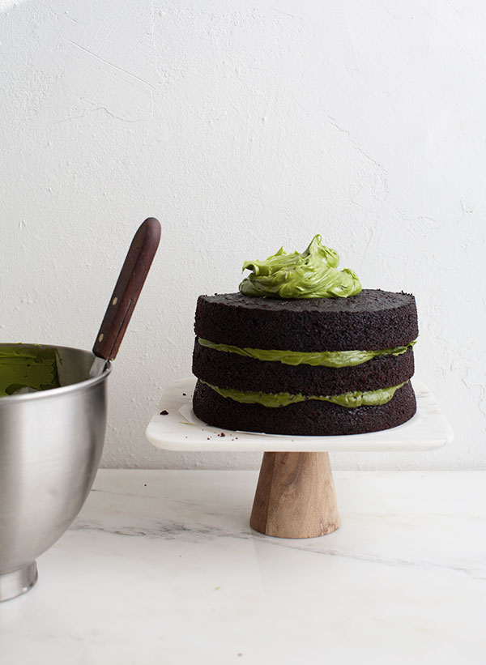

Chocolate Matcha Cake

Description
Are you looking for a sweet treat? Well you've come to the right place!
Ingredients
Chocolate Cake
- 2 2/3 cups sparkling water
- 1 1/3 cups dark unsweetened cocoa powder
- 1/2 cup plus 3 tablespoons (155g), unsalted butter, cubed (plus more for cake pans)
- 2 cups granulated sugar
- 3/4 cup brown sugar
- 2 2/3 cups all-purpose flour
- 2 teaspoons baking soda
- 2 teaspoons salt
- 3 large eggs
Frosting
- 3 sticks unsalted butter room temperature
- 4 cups powdered sugar
- 2 tablespoons matcha powder
- 2 teaspoons whole milk
Instructions
- Preheat the oven to 325 degrees F. Generously butter the inside of three 8-inch cake pans. I didn’t line the bottoms with a circle of parchment, but if you’re nervous about it, feel free to line them! If you want the cake layers to be very flat and even, see the link below for “baking flat cake layers.”
- In a medium saucepan, heat the sparkling water, cocoa powder, and butter over medium heat until the butter is melted. Add the white sugar and brown sugar and whisk until dissolved. Remove from the heat and let cool. In a large bowl, whisk the flour, baking soda, and salt together.
- In a small bowl, whisk the eggs until just beaten, then whisk them into the cooled cocoa mixture until combined. Gently fold the flour mixture into the cocoa mixture. The batter will be slightly lumpy–do not overbeat, as it could cause the cake to be tough.
- Divide the batter amongst the prepared cake pans and bake for about 30 minutes, rotating the pans halfway through the baking time, until a small skewer inserted into the cakes come out clean. Transfer the cake pans to a wire rack to cool completely for about 10 minutes, until the cakes begin to separate from the sides of the pans. Turn over onto a wire rack and tap the bottom of the pan a few times until it releases. Cool cakes completely before assembling and frosting. Just an FYI: feel free to make the cakes the night before. Cakes will be moist and delicious for up to 2 days if wrapped tightly in plastic wrap.
- To make the frosting, add the butter to the bowl of a stand-up mixer with the paddle attachment. In a separate bowl, sift together the powdered sugar and matcha powder together. Beat the butter until smooth and then add the powdered and matcha powder, in a few batches, to the butter. Pour in a teaspoon of milk and beat until smooth. You may need to add an additional teaspoon of milk to get the right consistency.
- To assemble the cake, place the first layer on a plate or cake stand. Add a few spoonfuls of frosting and spread as evenly possible. Top with the second layer and repeat the frosting process. Add a few generous spoonfuls of frosting to the very top and smooth it out. This is a naked cake! If you want enough frosting to go all up the sides you’ll most likely need to double the frosting recipe. Slice and enjoy.
Credit